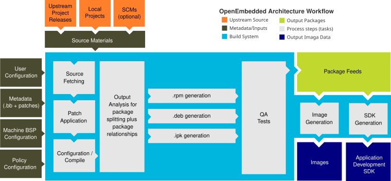

The Build Process Explained¶
Phase 1 · Page 8 of 9
Page Goal
Run the actual build, understand what BitBake does under the hood, and know how to debug when things go wrong.
Starting the build
Remember the Max File watches error from page 4 of phase 1, max sure to increase max file watches
To Check our build in the commandline - run the commands as below in the build directory.
verify layers again using bitbake-layers show-layers
bitbake core-image-sato or bitbake core-image-full-cmdline
Terminal Output¶
You'll see lines like:
NOTE: Preparing RunQueue
NOTE: Executing Tasks
Currently 3 running tasks (245 of 4521) 5% |## |
0: linux-tegra-5.10.104+gitAUTOINC+...-r0 do_fetch (from OE4T/...)
1: glibc-2.35-r0 do_compile
2: busybox-1.35.0-r0 do_configure
This is representative, a screenshot will be attached here again for reference.
Rebuilds Are Fast¶
- After your first build, subsequent builds are much faster. Yocto caches (stores all the completed work in a directory for quick access) for every task (this is called the "sstate cache"), so only changed recipes need to be rebuilt.
Watching the Build¶
- BitBake shows live progress in your terminal — you can see which tasks are running and how many are left.
- To check how much disk space the build is using, open a second terminal and run:
du -sh ~/yocto/poky/build/tmp - If a task fails, BitBake tells you exactly which recipe and task failed, and where the log file is.
Build Complete — What Success Looks Like¶
A successful build ends with:
No ERROR: lines. You're done!
The BitBake Task Pipeline¶
The diagram below shows the high-level workflow of the Yocto Project build process, showing how configuration inputs and source materials flow through the system to produce package feeds, target images, and SDKs:

What Each Task Does¶
Every recipe goes through these steps in order:
| Task | What It Does | Example |
|---|---|---|
do_fetch |
Downloads source code from SRC_URI (git, http, local files) |
Clones the Linux kernel from NVIDIA's git repo |
do_unpack |
Extracts downloaded archives into a working directory | Unpacks a .tar.gz into tmp/work/.../<recipe>/ |
do_patch |
Applies patch files listed in SRC_URI |
Applies PREEMPT_RT patch to the kernel |
do_configure |
Runs configuration (autoconf, cmake, kernel menuconfig) | ./configure --host=aarch64-... |
do_compile |
Compiles the source code (cross-compilation) | make -j8 with cross-compiler |
do_install |
Installs compiled files to a staging directory (${D}) |
make install DESTDIR=${D} |
do_package |
Splits installed files into packages (deb/rpm/ipk) | Creates linux-tegra_5.10.deb |
do_package_write_deb |
Writes the actual .deb files to the deploy directory |
Writes to tmp/deploy/deb/ |
do_rootfs |
Assembles selected packages into a root filesystem | Creates the ext4 image |
do_image |
Converts rootfs to final image format(s) | Generates .ext4, .wic, etc. |
do_deploy |
Copies final artifacts to tmp/deploy/images/<MACHINE>/ |
Kernel, DTB, rootfs, flash tools |
Build Directory Layout¶
After a build completes, your build/ folder will contain these key directories:
build/
├── conf/
│ ├── local.conf ← Your build configuration
│ └── bblayers.conf ← Your layer configuration
├── tmp/
│ ├── deploy/
│ │ ├── images/ ← Final images (ext4, kernel, DTB)
│ │ ├── deb/ ← Built .deb packages
│ │ └── licenses/ ← License files for all packages
│ ├── work/
│ │ └── <ARCH>/ ← Per-recipe working directories
│ │ └── <recipe>/
│ │ └── <version>/
│ │ ├── temp/
│ │ │ ├── log.do_compile ← Build log
│ │ │ ├── log.do_configure ← Config log
│ │ │ └── run.do_compile ← Actual script that ran
│ │ ├── image/ ← do_install output
│ │ └── packages-split/ ← Package contents
│ ├── sysroots/ ← Cross-compilation sysroots
│ └── buildstats/ ← Timing data per task
└── cache/ ← BitBake parser cache
The most important directories to know:
- tmp/deploy/images/<MACHINE>/ — your final OS image files (this is what you flash to the device)
- tmp/work/<ARCH>/<recipe>/<version>/temp/ — log files for each recipe (go here when debugging build failures)
Fixing a Failed Build¶
How to Find What Went Wrong¶
- BitBake prints the failed recipe and task name:
ERROR: Task (...) failed - It also tells you exactly where the log file is:
ERROR: Logfile of failure stored in: /path/to/log.do_compile - Open the log and read the last 50 lines to find the actual error:
cat <log-path> | tail -50
Re-Running a Single Recipe¶
bitbake -c compile <recipe-name> # Re-run do_compile for one recipe
bitbake -c cleansstate <recipe-name> # Wipe sstate for one recipe and rebuild
Common Build Errors¶
| Error | Likely Cause | Fix |
|---|---|---|
do_fetch: Fetcher failure |
Network issue or bad SRC_URI |
Check internet; check recipe URL |
do_compile: ld returned 1 exit status |
Link error — missing dependency | Check DEPENDS in recipe |
do_rootfs: Unable to install ... |
Package not found | Check IMAGE_INSTALL spelling, check layer provides the package |
Nothing PROVIDES 'virtual/kernel' |
MACHINE not set or wrong | Check local.conf MACHINE value |